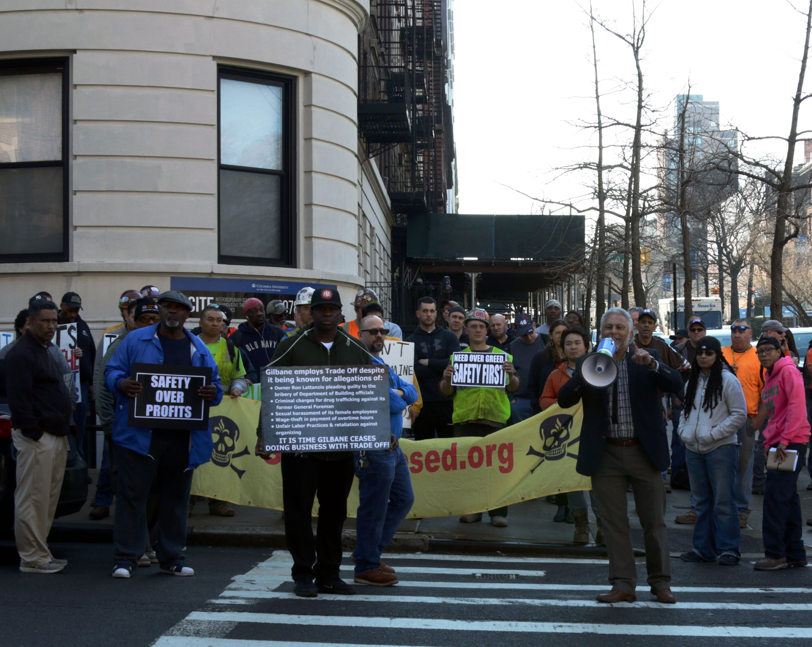
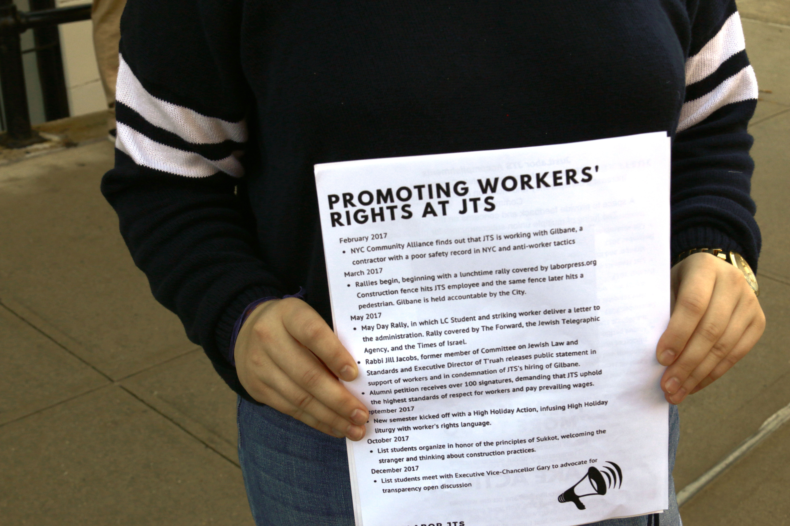

Construction workers on the future site of Jewish Theological Seminary's "21st-Century Campus" in Morningside Heights, Manhattan, on February 21, 2018. (Credit: Anya van Wagtendonk)
Last spring, students and alumni from the Jewish Theological Seminary of America - a Morningside Heights-based undergraduate and graduate school, and the foremost ordaining institution of rabbis within the Conservative movement - protested the start of major construction on their school's campus.
But student activists have struggled to maintain momentum. More than a year into JTS' "21st Century Campus" project, a 100,000-square-foot structure which will house new dorm space, an auditorium, and a library, they've encountered challenges both universal and unique to a religious institution.
"We don't have a lot of buy-in on [the campaign] right now," said Noam Green, 19, a sophomore in a dual program between JTS' List College and Barnard College. "The majority of students are apathetic."
At the project's outset, members from the Building and Construction Trades Council of Greater New York, which comprises 15 unions and about 100,000 members, protested JTS' retention of Gilbane Building Company as the project's general contractors. They argued that Gilbane's "open shop" model - in which they consider bids from both union and non-union subcontractors - puts unionized workers at a disadvantage and weakens fair labor practices generally.
They also accused Gilbane of employing subcontractors with records of wage theft, safety violations, and racial and sexual harassment, according to Liana Kallman, an organizer with the Community Alliance for Workers Justice.
"Gilbane's overriding focus is on constructing quality buildings across New York State with a safe, productive and engaged workforce," a Gilbane spokesperson said in a statement. "We employ both union and non-union labor to meet this objective and build projects according to the high standards that our clients and partners expect from Gilbane."
One year ago, about 100 alumni signed onto a petition expressing support for the campaign and concerns about the project. The petition cited a 2008 ruling out of JTS' own Committee on Jewish Law and Standards, which determined that using union labor was the best way to fulfill Jewish legal and ethical imperatives.
Today, the remnants of the on-campus campaign call themselves "Just Labor at JTS," and less than a dozen students still participate. In addition to general apathy, Green says her organizing efforts are hampered by concern about being seen as a troublemaker. Rabbis must receive support from their ordaining institution in order to receive good synagogue placements.
"Basically, people are very worried about being hired after college, or having a stain on their record in the context of this leading Conservative institution," said Green.

Reinaldo Torres leads a rally at the corner of 122nd Street and Broadway, outside the main entrance to the Jewish Theological Seminary in Morningside Heights, on February 21, 2018. (Credit: Anya van Wagtendonk)
At a rally last month outside the campus' main entrance on 122nd Street and Broadway, Noa Rubin, 19, was the only JTS student surrounded by men and women wearing hardhats and holding signs that read, "Safety over profits" and "Don't undermine worker standards."
"If someone says they're being oppressed, I try to listen," said Rubin, also a sophomore in the dual JTS/Barnard program, as she handed out flyers to passersby. She said her participation in the campaign - which is now focusing on improving conditions on the worksite, after JTS declined to replace Gilbane - stemmed from both of her majors: sociology at Barnard, and Talmud at JTS.
"Jewish people have a long history of caring for workers' rights," she said. "I've learned about that at JTS."

JTS student Noa Rubin, 19, holds information about the Just Labor campaign during a rally calling for better working conditions on a JTS construction project on February 21, 2018. (Credit: Anya van Wagtendonk)
But to others, accusing a major Jewish institution of oppression sparks fears of antisemitism, which often takes form in the belief that Jews wield outsized power, influence, and financial resources.
"We are in a war against greed," Reinaldo Torres, an organizer and former sheet metal worker, shouted into a megaphone as the crowd cheered.
"We're disappointed that people would use those types of terms regarding JTS in particular and Jewish intuitions in general," said Marc Gary, the school's Executive Vice Chancellor and Chief Operating Officer, who is overseeing the construction project. "The whole purpose of this institution is to serve the community, not only the Jewish community but the broader community."
Green, the other student organizer, shares that concern.
"That's something that has been and will always be on my mind, considering legacies and current realities of anti-Semitism," she said. "That's why we're trying to emphasize that…exploitation on the JTS campus is not unique to JTS. It's a thing happening all across the city."
On both sides of this fight, the work continues. Construction commenced this week on the skeleton of the new campus buildings. Gary said that the project is on track to be completed by next summer, in time for the incoming class of 2019. Administrators and faculty are beginning to plan for the public programming and events that will make the space come alive.
The student protesters, too, continue to push for better healthcare for any worker employed by Gilbane, and for greater awareness on campus that human labor is responsible for every beam erected and every brick laid.
And in a few weeks, they'll head up the street to support students at the Union Theological Seminary, as students on that campus begin their own campaign against a new construction project.